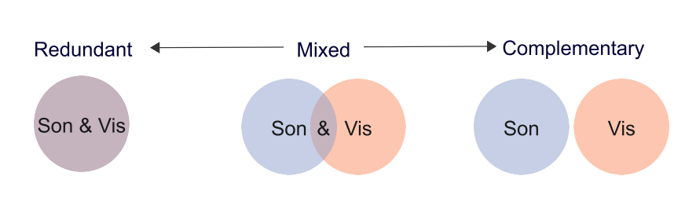

Open Your Ears and Take a Look: A State‐of‐the‐Art Report on the Integration of Sonification and Visualization

Venue. CGF (2024)
Abstract. The research communities studying visualization and sonification for data display and analysis share exceptionally similar goals, essentially making data of any kind interpretable to humans. One community does so by using visual representations of data, and the other community employs auditory (non-speech) representations of data. While the two communities have a lot in common, they developed mostly in parallel over the course of the last few decades. With this STAR, we discuss a collection of work that bridges the borders of the two communities, hence a collection of work that aims to integrate the two techniques into one form of audiovisual display, which we argue to be “more than the sum of the two.” We introduce and motivate a classification system applicable to such audiovisual displays and categorize a corpus of 57 academic publications that appeared between 2011 and 2023 in categories such as reading level, dataset type, or evaluation system, to mention a few. The corpus also enables a meta-analysis of the field, including regularly occurring design patterns such as type of visualization and sonification techniques, or the use of visual and auditory channels, showing an overall diverse field with different designs. An analysis of a co-author network of the field shows individual teams without many interconnections. The body of work covered in this STAR also relates to three adjacent topics: audiovisual monitoring, accessibility, and audiovisual data art. These three topics are discussed individually in addition to the systematically conducted part of this research. The findings of this report may be used by researchers from both fields to understand the potentials and challenges of such integrated designs while hopefully inspiring them to collaborate with experts from the respective other field.
Link to this page: